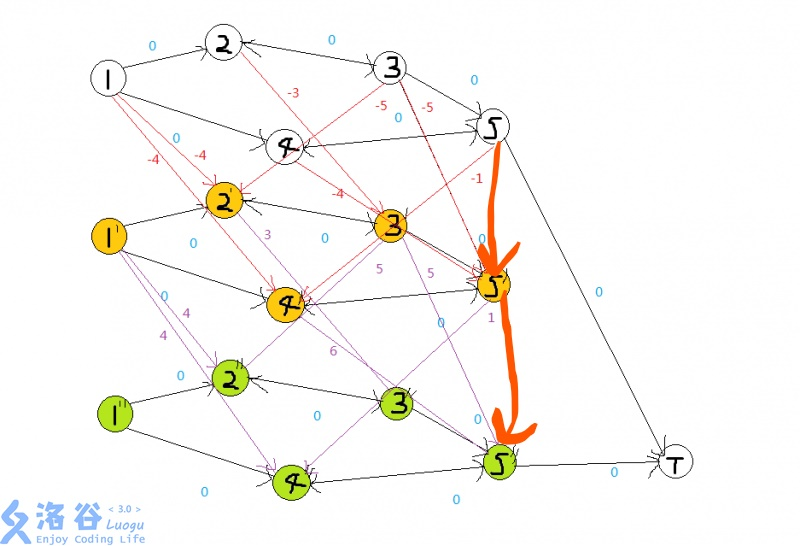

分层图一般解决更改K个边权为0的问题。
看例题，如果不知道分层图，这道题难以下手。但是如果知道，这道题就是大水题。
啥是分层图
对于路径上可以免费K条边的最短路。我们把这张图复制K张，新图有$K+1$个原图。然后，对于每两张相同的图之间，若两个点有边，则把上一张图的点连向下一条边，且边权为0。特别地，对于每张图的终点，要向下一张图的终点连边权为0的边（防止前面走的到但后面卡住了即用小于K次免费就可以到终点）。
大致如图。

看看代码实现吧！
1 |
|
注意Add_Line的操作要加每个复制的图中的边，每两个相邻复制的图的免费边。
注意终点是最后一个图里的。